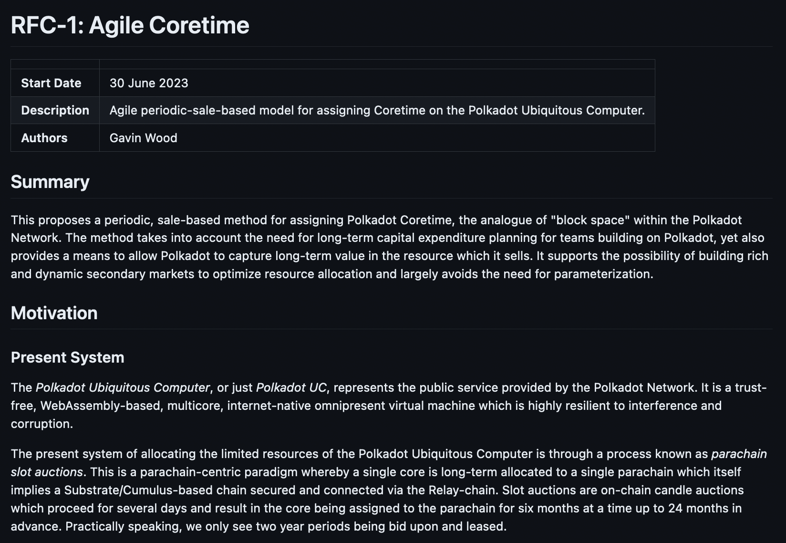
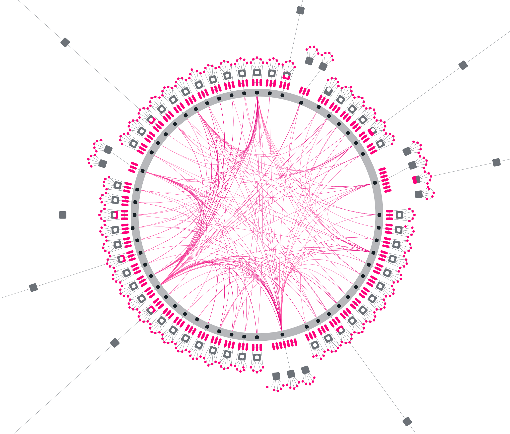
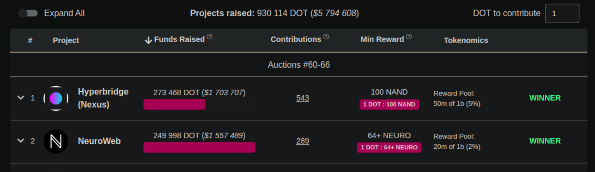
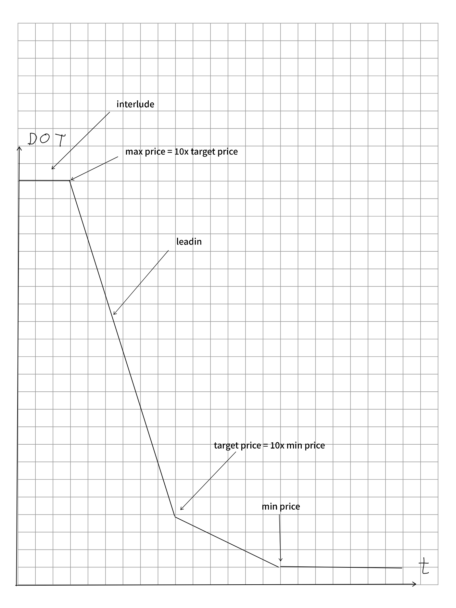
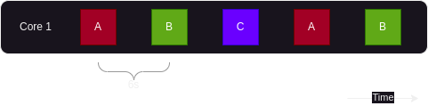
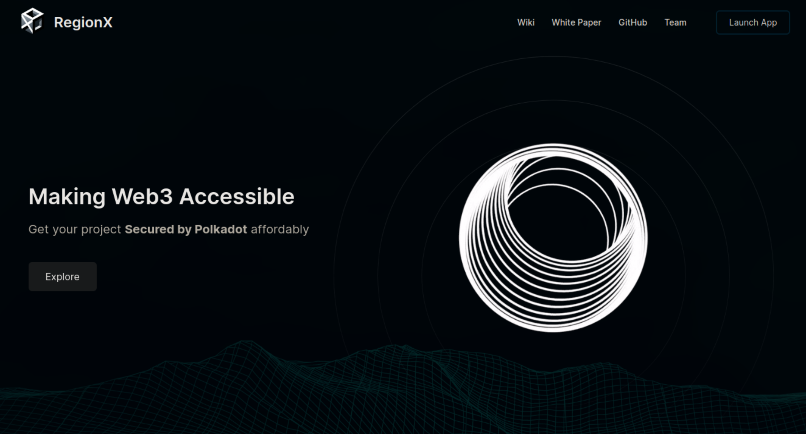
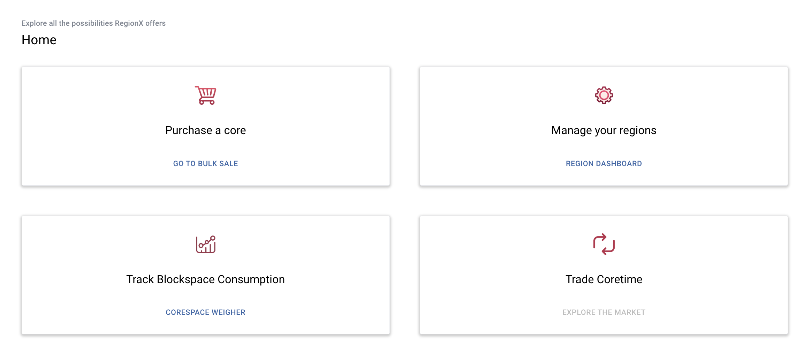
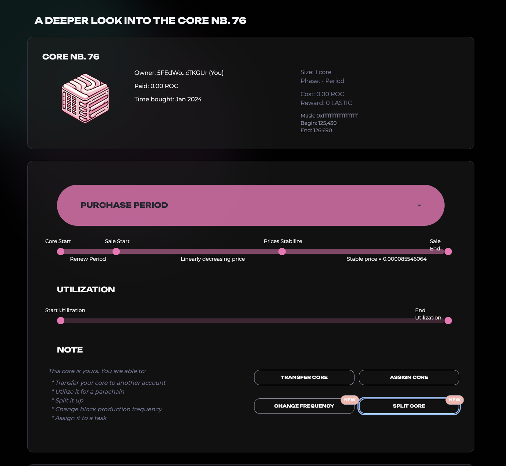
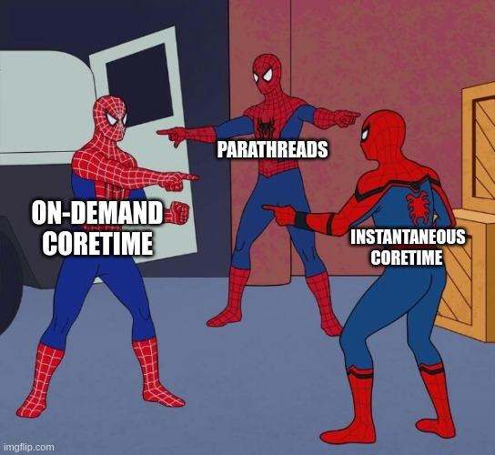
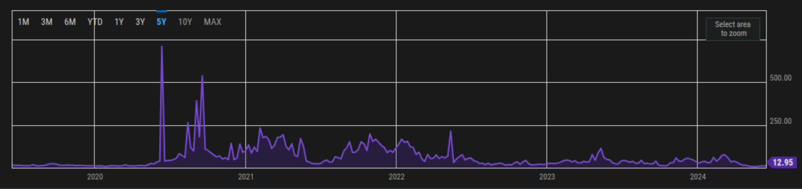

<!DOCTYPE html>
<html lang="en">

<head>
  <meta charset="utf-8" />
  <meta name="viewport" content="width=device-width, initial-scale=1.0, maximum-scale=1.0, user-scalable=no" />

  <title>Agile Coretime</title>
  <link rel="icon" href="./../../assets/favicon.svg" />
  <link rel="shortcut icon" href="./../../assets/favicon.png" />
  <link rel="stylesheet" href="./../../dist/reset.css" />
  <link rel="stylesheet" href="./../../dist/reveal.css" />
  <link rel="stylesheet" href="./../.././assets/styles/PBA-theme.css" id="theme" />
  <link rel="stylesheet" href="./../../css/highlight/shades-of-purple.css" />

  <link rel="stylesheet" href="./../.././assets/styles/custom-classes.css" />

</head>

<body class="site">
  <header class="site-header">
    <!-- This logo is a link only on the watching server, not the production build -->
    <a href="">
      
    </a>
  </header>
  <main class="reveal">
    <article class="slides">
      <section ><section data-markdown><script type="text/template">

# Agile Coretime

<aside class="notes"><p>Today we&#39;ll be tackling Agile Coretime. How many people heard about it?
I often see people confused about what coretime truly is, when it comes and what &quot;feature&quot; it is exactly.</p>
</aside></script></section><section data-markdown><script type="text/template">
# Agile Coretime

## Core Features

- Bulk Coretime Auctions
- On-Demand Coretime
- Coretime Interlacing
- Elastic Scaling
- Renewals
- Coretime Markets

<aside class="notes"><p>In reality agile coretime is a collection of features that all interact with each other to overhaul the way Polkadot manages
and exposes it&#39;s most important resources, execution cores. Essentially it&#39;s an alternative scheduling mechanism.</p>
</aside></script></section><section data-markdown><script type="text/template">
# Agile Coretime

## RFC Disclaimer



<aside class="notes"><p>The coretime I will be presenting today is still in development. The blueprint for it was outlined in the Fellowship RFC 1 and 5 (links in notes) and it is mostly staying true to it but implementation details can be different here and there. Nevertheless the spirit will remain unchanged.</p>
<p><a href="https://github.com/polkadot-fellows/RFCs/blob/main/text/0001-agile-coretime.md">https://github.com/polkadot-fellows/RFCs/blob/main/text/0001-agile-coretime.md</a>
<a href="https://github.com/polkadot-fellows/RFCs/blob/main/text/0005-coretime-interface.md">https://github.com/polkadot-fellows/RFCs/blob/main/text/0005-coretime-interface.md</a></p>
</aside></script></section><section data-markdown><script type="text/template">
# Agile Coretime

## JAM Disclaimer


<aside class="notes"><p>And we can go further because more importantly coretime will carry over into the future when the chain migrates to JAM. In fact Jam needs coretime as a dependency so what we are learning here will remain very relevant in the upcoming years.</p>
<p><a href="https://graypaper.com/">https://graypaper.com/</a></p>
</aside></script></section></section><section ><section data-markdown><script type="text/template">
# The Product of Polkadot

**What is the product?**

<aside class="notes"><p>First let’s zoom out and look at the Polkadot protocol. What does it actually produce? And I don’t mean the individual parachains but the core protocol (mostly living on the relay chain) itself.</p>
</aside></script></section><section data-markdown><script type="text/template">
# The Product of Polkadot

## Blockspace


<aside class="notes"><p>It is blockspace! Blockspace is the data that we guarantee consensus on and provide availability for. And not only is it blockspace, it is high quality blockspace.
The quality is referring to how confidence in it being secure and live, it needs to be durable system that stood the test of time.</p>
</aside></script></section><section data-markdown><script type="text/template">
# The Product of Polkadot

## Sharding



Sharding allows us to produce more blockspace with the same resources

<aside class="notes"><p>And because Polkadot is effectively sharded it can validate in parallel producing plenty of blockspace.</p>
</aside></script></section><section data-markdown><script type="text/template">
# The Product of Polkadot

## Blockspace vs Coretime

They are two sides of the same coin. Execution cores enable sharding and they create the highly valuable high quality blockspace.

> (Secure) blockspace is the resource Polkadot provides, which is measured in and allocated through coretime.

<aside class="notes"><p>There are some caveats to it, but generally coretime and blockspace are very highly coupled in Polkadot. The more coretime you have the more blockspace you gain out of it.
Coretime is presenting a more execution based perspective and blockspace paints it in a data oriented way.</p>
</aside></script></section><section data-markdown><script type="text/template">
# The Product of Polkadot

## Pricing blockspace


Blockspace needs to be priced and distributed to those that need it.

<aside class="notes"><p>But for this blockspace to be utilized we need to find appropriate clients and sell it to them. Generally sovereign and usually commercial parachains were the main consumers of blockspace so in what form was it sold and how were they acquiring it?.</p>
</aside></script></section></section><section ><section data-markdown><script type="text/template">
# Parachain Leases

<aside class="notes"><p>Originally blockspace was sold in the form of leases.</p>
</aside></script></section><section data-markdown><script type="text/template">
# Parachain Leases

Lease gave you the right to register your parachain and fully occupy a specific core.

A core is able to validate a single block every 6s and leases were practically always 2 years.


<aside class="notes"><p>This design was very strictly defining the amount and frequency of the blockspace being sold. Teams could only buy the right to validate a single block every 6s for up to 2 years. That is committing to roughly 175 000 blocks! We called that commitment a lease. And most parachains to this day still operate on those leases.</p>
</aside></script></section><section data-markdown><script type="text/template">
# Parachain Leases

Lease gave you the right to register your parachain and fully occupy a specific core.

A core is able to validate a single block every 6s and leases were practically always 2 years.


<aside class="notes"><p>2 years is a really looo-</p>
</aside></script></section><section data-markdown><script type="text/template">
# Parachain Leases

Lease gave you the right to register your parachain and fully occupy a specific core.

A core is able to validate a single block every 6s and leases were practically always 2 years.


<aside class="notes"><p>ooo-</p>
</aside></script></section><section data-markdown><script type="text/template">
# Parachain Leases

Lease gave you the right to register your parachain and fully occupy a specific core.

A core is able to validate a single block every 6s and leases were practically always 2 years.


<aside class="notes"><p>ooo-</p>
</aside></script></section><section data-markdown><script type="text/template">
# Parachain Leases

Lease gave you the right to register your parachain and fully occupy a specific core.

A core is able to validate a single block every 6s and leases were practically always 2 years.


<aside class="notes"><p>-ong time.
In reality teams could opt for a bit of a shorter time than two years but historically nearly none of them actually bid for periods lower than two years. Turns out that teams actually really really value long-term stability. Let’s remember that. It’s gonna come up.</p>
</aside></script></section><section data-markdown><script type="text/template">
# Parachain Leases

## Slot Auctions

Leases are acquired on candle auction called Slot Auctions

<aside class="notes"><p>So now we know what is being sold so how was it sold? Every once in a while when an execution core was unscheduled it was being put up to a slot auction. A slot auction aimed to find a parachain that would occupy it for the next two years. The auction was a candle auction for those that remember how they work. Anyone wants to quickly remind us?</p>
</aside></script></section><section data-markdown><script type="text/template">
# Parachain Leases

## Slot Auctions



<aside class="notes"><p>The auctions required huge amounts of DOT tokens. Often millions of dollars. So to allow amazing but poorly funded teams to flourish a crowd loan system was created. It allowed normal token holders to pool their dot together and lend them to the team. Those tokens were then used to secure a bid in the auction. Of course the token holders were not doing it for free. They were expecting some rewards in return coming from the team behind the project.</p>
<p><a href="https://parachains.info/auctions/polkadot-60-66">https://parachains.info/auctions/polkadot-60-66</a></p>
</aside></script></section><section data-markdown><script type="text/template">
# Parachain Leases

## Slot Auctions

Tokens were **refunded** after the lease was over


What was the cost?

<aside class="notes"><p>And now the most interesting bit after the lease was over the funds were returned to the original owners. Wait?! So what was the cost in that case if they just got them back? Was it free?</p>
</aside></script></section><section data-markdown><script type="text/template">
# Parachain Leases

## Issues

Why is Polkadot deprecating slot auctions and leases?

<aside class="notes"><p>Today things are changing but to understand why let’s look at some of the pain points of the original system.</p>
</aside></script></section><section data-markdown><script type="text/template">
# Parachain Leases

## Issues

- Most parachains didn't fully fill up their blocks (wasted blockspace)
- ...
- ...
- ...
- ...

<aside class="notes"><p>Leases were very inflexible and in reality not many blockchains needed as much as a huge block every 6s. There was literally too much throughput for most use cases! But you still had to purchase the whole thing giving you blocks every 6s so the rest was waste</p>
</aside></script></section><section data-markdown><script type="text/template">
# Parachain Leases

## Issues

- Most parachains didn't fully fill up their blocks (wasted blockspace)
- Very long commitments
- ...
- ...
- ...

<aside class="notes"><p>Not only the throughput was massive but the duration of the commitment was very long so small teams couldn’t really compete for slots as teams of erring longer commitments had priority</p>
</aside></script></section><section data-markdown><script type="text/template">
# Parachain Leases

## Issues

- Most parachains didn't fully fill up their blocks (wasted blockspace)
- Very long commitments
- Very large DOT amounts were needed to secure slots
- ...
- ...

<aside class="notes"><p>As mentioned before the amounts of tokens needed were huge. That is a huge responsibility and pressure for a few devs that just
want to build something cool without too much friction. Bidding with millions of dollars is no joke.</p>
</aside></script></section><section data-markdown><script type="text/template">
# Parachain Leases

## Issues

- Most parachains didn't fully fill up their blocks (wasted blockspace)
- Very long commitments
- Very large DOT amounts were needed to secure slots
- Some parachains overfilled their blocks
- ...

<aside class="notes"><p>I mentioned some parachains underfilled their blocks, well some others in fact overfilled them! There were some amazingly successful
projects that were bottlenecked as single core producing blocks every 6s was not enough for them.</p>
</aside></script></section><section data-markdown><script type="text/template">
# Parachain Leases

## Issues

- Most parachains didn't fully fill up their blocks (wasted blockspace)
- Very long commitments
- Very large DOT amounts were needed to secure slots
- Some parachains overfilled their blocks
- Lease Auctions and Crowd Loans were huge endeavors causing major overhead

<aside class="notes"><p>And finally slot auctions were a noticeable burden for the teams. Every two years they had to significantly plan around them to garner support, funds, promise a reward scheme for the crowd loans and figure out strategically how to bid at the auctions.</p>
</aside></script></section></section><section  data-markdown><script type="text/template">
# Agile Coretime Mission

- Waste less blockspace
- Allow for higher max throughout
- Lower the barriers of entry
- Maintain some price predictability
- Remove or simplify the overhead

<aside class="notes"><p>This is pretty much a direct response to the issues we just listed a moment ago. Agile coretime aims to remove any artificial systemic barriers
and expand on how builders can utilize the underlying resources of Polkadot. So let&#39;s look at how coretime aims to actually achieve that!</p>
</aside></script></section><section ><section data-markdown><script type="text/template">
# Bulk Auctions

<aside class="notes"><p>We&#39;ll start with a method that should be the most familiar and in fact very similar to the old slot auctions - bulk auctions.</p>
</aside></script></section><section data-markdown><script type="text/template">
# Bulk Auctions

## What is being sold?

Parablock every 6s for 28 days


<aside class="notes"><p>So how much coretime are we selling this time around? Bit less then previously but still a large chunk of it - a whole bulk of coretime.</p>
</aside></script></section><section data-markdown><script type="text/template">
# Bulk Auctions

## What method?

Dutch Auctions


<aside class="notes"><p>And to sell all of that we are using the classic dutch auctions. In that case the price decreases over the span
of weeks so it&#39;s not as rapid as the traditional ones, but the principle remains.</p>
</aside></script></section><section data-markdown><script type="text/template">
# Bulk Auctions

## Where do the funds go?

Price paid will no longer be returned after the "lease" is over. This time the cost is paid upfront instead of
implicitly through the opportunity cost of locking your funds like in crowd loans.

<aside class="notes"><p>CUrrent dominant strategy agreed on by the community is to burn the coretime profits. TLDR why is that volatile flows to the treasure are not healthy and introduce complex game theoretical attacks. Read more here: <a href="https://github.com/polkadot-fellows/RFCs/blob/main/text/0010-burn-coretime-revenue.md">https://github.com/polkadot-fellows/RFCs/blob/main/text/0010-burn-coretime-revenue.md</a></p>
</aside></script></section><section data-markdown><script type="text/template">
# Bulk Auctions

## Pricing

Price adapter cycle:

- System starts at target price X
- Dutch auction initiate with 10X (much more then we expect to sell it for)
- Price drops to X over a week
- Price drops to 10% of X over the next week which is the minimum
- The core sold at the lowest price (or minimum price if no sales) becomes new target price

<aside class="notes"><p>Pricing could be it&#39;s own lecture but to keep it brief. The system starts with some default price X. The dutch auctions enters what we call a leadin period, a period where the price will steeply decrease from 10x to x over a week and then from x to x/10 over the next week. Then it&#39;s just a matter of setting a new target price for the next sale. Sales happen every 28 days.</p>
</aside></script></section><section data-markdown><script type="text/template">
# Bulk Auctions

## Pricing



<aside class="notes"><p>This very roughly approximates an exponential decay curve with three linear functions. We are actually in discussions to make it smooth and make the potential scope of prices even wider.</p>
</aside></script></section><section data-markdown><script type="text/template">
# Bulk Auctions

## Leases repackaged?


<aside class="notes"><p>Although despite this difference at this point you might be asking, hey, this is nearly exactly the same as the method
before. How is that even new or better? Because that bulk you buy carries a lot more information and flexibility than previous leases.</p>
</aside></script></section><section data-markdown><script type="text/template">
# Bulk Auctions

## Coretime Regions

Leases when bought were instantly fixed and unchangeable.

Coretime regions are NFTs that are transferrable and programmable\*.

<aside class="notes"><p>Previously to exchange leases teams had to go through governance and create a referendum. This time coretime regions can easily be reassigned to a different parachain.
This allows interested parties to buy some off the auction and sell it off for a fixed price to others. Teams that don&#39;t want to deal with auctions can
source it through those brokers. We&#39;ll talk about them more soon but region reassignment is just the first step towards coretime programmability. So
let&#39;s now look at interlacing.</p>
</aside></script></section><section data-markdown><script type="text/template">
# Interlacing

<aside class="notes"><p>This is the truly exciting stuff. That was fully impossible before.</p>
</aside></script></section><section data-markdown><script type="text/template">
# Interlacing


<aside class="notes"><p>So with no interlacing someone could utilize bulk like this. Just naively put out a block every 6s.</p>
</aside></script></section><section data-markdown><script type="text/template">
# Interlacing

Interlacing two or more different parachains means they can be co-scheduled onto the same execution core.

<aside class="notes"><p>I hope the name this time around is actually pretty self-descriptive. Interlacing allows to weave two or more different parachains on the
same core. They might be taking turns or using any other arbitrary co-scheduling pattern.</p>
</aside></script></section><section data-markdown><script type="text/template">
# Interlacing

## Example


<aside class="notes"><p>A concrete example of that would be two parachains coscheduled onto the same core. They would take turns in producing blocks so each on will effectively have a 12s block time.</p>
</aside></script></section><section data-markdown><script type="text/template">
# Interlacing

## Mask Programmability

Interlacing is achieve through manipulating the coretime region bit masks.

Freshly bought coretime region from the bulk auction would be fully scheduled (complete):


</script></section><section data-markdown><script type="text/template">
# Interlacing

## Mask Programmability

Two parachains interlaced together would split the region into 2 complementary regions:


<aside class="notes"></aside></script></section><section data-markdown><script type="text/template">
# Interlacing

## Mask Programmability

Interlacing always should create masks that complement each other (XOR to 1):


<aside class="notes"></aside></script></section><section data-markdown><script type="text/template">
# Interlacing



<aside class="notes"><p>This can be pushed quite far triple co-scheduling is not an issue at all and if you want a parachain that makes a block only every 1000th slots you can!</p>
</aside></script></section><section data-markdown><script type="text/template">
# Interlacing

How to find other parachains willing to interlace with you? And is it all easy to do?

<aside class="notes"><p>The question is where does this interlacing happen from the user interface perspective? How to find other parachains willing to interlace
with you? This is where the secondary markets come in.</p>
</aside></script></section></section><section ><section data-markdown><script type="text/template">
# Secondary Markets
</script></section><section data-markdown><script type="text/template">
# Secondary Markets

RFC-1:

> "[Agile Coretime] supports the possibility of building rich and dynamic secondary markets to optimize resource allocation and largely avoids the need for parameterization."

<aside class="notes"><p>Coretime was built with secondary markets in mind. Those would be the interfaces where bulk coretime is bought, then split into smaller regions and potentially sold off to others.</p>
</aside></script></section><section data-markdown><script type="text/template">
# Secondary Markets

## Current Solutions



<aside class="notes"><p><a href="https://www.regionx.tech/">https://www.regionx.tech/</a></p>
</aside></script></section><section data-markdown><script type="text/template">
# Secondary Markets

## Current Solutions


<aside class="notes"><p><a href="https://www.lastic.xyz/">https://www.lastic.xyz/</a></p>
</aside></script></section><section data-markdown><script type="text/template">
# Secondary Markets

## What to expect?


</script></section><section data-markdown><script type="text/template">
# Secondary Markets

## What to expect?



<aside class="notes"><p>Interfaces for buying or auto-bidding on bulk auctions
Splitting and interlacing automation.
Automatic renewals.
Coretime futures (maybe?)
Who knows what else!</p>
</aside></script></section></section><section ><section data-markdown><script type="text/template">
# On-Demand Coretime
</script></section><section data-markdown><script type="text/template">
# On-Demand Coretime

## Disclaimer

**On-Demand Coretime** = Parathreads = Instantaneous Coretime

<aside class="notes"><p>Naming is hard. Parathreads was the original name for that concept that was a part
of the design since 1.0 days. On-Demand is the generally accepted term nowadays. But seeing this slide I just couldn&#39;t stop myself. We already had the version with two but now we graduated to three.</p>
</aside></script></section><section data-markdown><script type="text/template">
# On-Demand Coretime

## Disclaimer



<aside class="notes"></aside></script></section><section data-markdown><script type="text/template">
# On-Demand Coretime

## Limitations of Interlacing and Coretime Regions

- Awesome flexibility ✅
- Requires week-long comittment ❌ (good enough for most)

<aside class="notes"><p>Interlacing was giving a lot of flexibility in terms of how much throughput and latency you want, but generally you were still committing to it in advance, often even up to weeks before using it.</p>
</aside></script></section><section data-markdown><script type="text/template">
# On-Demand Coretime

What if we don't even know if we'll need a core in 5 minutes?

On-demand is an **alternative** native method of acquiring coretime that focuses on low latency.

<aside class="notes"><p>What if we need to more dynamically react to the demand? What if we only want to tinker and play with Polkadot temporarily? On-demand is aiming to solve that by being an alternative native method of acquiring coretime.</p>
</aside></script></section><section data-markdown><script type="text/template">
# On-Demand Coretime

## Analogy to Cloud Spot Compute

<aside class="notes"><p>Anyone here has heard of AWS Spot Instances? Or maybe Google Cloud Spot?</p>
</aside></script></section><section data-markdown><script type="text/template">
# On-Demand Coretime

On-Demand allows to purchase a single block worth of coretime on a very short notice (6-12s).
</script></section><section data-markdown><script type="text/template">
# On-Demand Coretime

## Core Use Cases

- Temporary parachains
- Tinkering and experimentation
- Low latency applications that produce very infrequently (certifications, etc.)

<aside class="notes"><p>On-demand is perfect when someone’s wants to tinker and only temporarily make a few blocks or maybe for business that produces blocks very rarely and infrequently. Maybe you have an app that rarely get used but when it does it is crucial to quickly execute it with low latency, then hibernating until you get a transaction a only then emitting a single on-demand block is perfect for you!</p>
</aside></script></section><section data-markdown><script type="text/template">
# On-Demand Coretime

## On-Demand Core Pool

Governance dedicated a fixed minimal amount of cores to be solely available for on-demand use (**on-demand core pool**), but there is a way to further expand
the on-demand core pool we'll cover later.

<aside class="notes"><p>Governance dedicated a fixed minimal amounts of cores to be solely available for on-demand use, but there is a way to further expand
the on-demand core pool we&#39;ll cover later. So to summarize most cores will be sold as bulk and then split, interlaced or used directly. Rest of cores
goes into the on-demand pool and can be purchased well... on-demand.</p>
</aside></script></section><section data-markdown><script type="text/template">
# On-Demand Coretime

## Pricing

On-demand pricing is detached from the bulk auction pricing.

It's a separate free market system where price is adapted based on the demand and current supply.


<aside class="notes"><p>On-demand pricing is detached from the bulk auction pricing.</p>
<p>It&#39;s a separate free market system where price is adapted based on the demand and current supply.</p>
<p>When not enough orders come through price can lower and when there is a backlog of pending orders price goes up.</p>
</aside></script></section></section><section ><section data-markdown><script type="text/template">
# Elastic Scaling

<aside class="notes"><p>Now we covered the cases of small and more sporadic uses. What about the big fish, the parachains that are not satisfied with a mere single core?</p>
</aside></script></section><section data-markdown><script type="text/template">
# Elastic Scaling

What if a single core is not enough for a large parachain project? 🐋

<aside class="notes"><p>What can they do scale further?</p>
</aside></script></section><section data-markdown><script type="text/template">
# Elastic Scaling

## Not just a hypothetical

Projects like Moonbeam and soon Mythical are definitely capable of fully utilizing a single core.


Early projections show that Mythical will need 2-3 cores (although async backing might lower this demand)

<aside class="notes"><p>Mythical is coming over to Polkadot with a pretty mature fanbase and a few already successful commercial products. And one big reason why the chose Polkadot is because they can build here what they could not in other decentralised chains, because of our superb scalability. They are projected to need 2-3 cores to fully utilize the blockspace. But they are also looking into async backing which might lower this demand.</p>
</aside></script></section><section data-markdown><script type="text/template">
# Elastic Scaling

Assume Parachain A is running out of blockspace:


<aside class="notes"><p>We see 2 parachains. Let&#39;s assume A is running out of space. They fully utilize the blocks every 6s. Core 2 sits empty there is no 3rd parachain that would like to register.</p>
<p>Looking at this diagram, even if you don&#39;t know about coretime I feel like the answer is just too obvious.</p>
</aside></script></section><section data-markdown><script type="text/template">
# Elastic Scaling

With Elastic Scaling Parachain A can purchase more cores and produce blocks on all of them to get more blockspace:


<aside class="notes"><p>With Elastic Scaling Parachain A can purchase more cores and produce blocks on all of them to get more blockspace. But does anyone see an issue with that? At least based on that diagram.</p>
</aside></script></section><section data-markdown><script type="text/template">
# Elastic Scaling

Parachain A needs to still produce blocks sequentially so now there needs to be an inner ordering between cores:


<aside class="notes"><p>This Increases the strain on collators as they not only have to produce multiple blocks per 6s but also share them to the next collator in the chain so they can import and potentially build their collation dependant on it. We generally limit elastic scaling to 3-4 cores max.</p>
</aside></script></section></section><section ><section data-markdown><script type="text/template">
# Renewals

<aside class="notes"><p>Remember when we discussed how in the old auction model vast majority of teams opted for maximum duration leases of 2 years? Why did they do it?</p>
</aside></script></section><section data-markdown><script type="text/template">
# Renewals

## Value of Long-Term Stability

Business don't like uncertainty. They want to know they can operate for a long time and budget for their expenses.



If every spike on the graph endangers your business you will build it elsewhere.

<aside class="notes"><p>See that spike around 2021? Gas fees went from 20-30 to 700. Imagine you suddenly can&#39;t run your business because the gas is too high. That&#39;s a no-go for any serious business. So long-term stability is crucial for any business.</p>
</aside></script></section><section data-markdown><script type="text/template">
# Renewals

## Price Stability Guarantee

Renewals are a special sort of treatment for teams that value long-term stability extremely highly.

If you don't interlace or split your coretime region and you fully utilize it then you can renew it for the same price you bought it for + small percentage (4% currently).
</script></section><section data-markdown><script type="text/template">
# Renewals

## Price Stability Guarantee

Renewals can be made in the interlude phase before the actual bulk auction starts:


<aside class="notes"><p>Making a renewal increases your costs but it gives a solid cap for how much they can increase allowing you to budget well into the future. Additionally if the target price in the market drops heavily the renewal price can also be lowered, but the growth is always capped.</p>
</aside></script></section><section data-markdown><script type="text/template">
# All Together

<aside class="notes"><p>Now comes the best part. What happens when all those features go live? They can be combined to fully utilize what Polkadot has to offer.</p>
</aside></script></section><section data-markdown><script type="text/template">
# All Together

## Leases Landscape


<aside class="notes"><p>In general we are hoping to migrate from a mundane and inflexible system like this.</p>
</aside></script></section><section data-markdown><script type="text/template">
# All Together

## Agile Coretime Landscape


<aside class="notes"><p>To a much more free market model where blockspace can be freely allocated, interlaced, exchanged, scaled etc. Giving away the freedom to the users and allowing them to fully utilize the resources of Polkadot.</p>
</aside></script></section><section data-markdown><script type="text/template">
# All Together

## Agile Coretime Combinations

- On-Demand cores work for Elastic Scaling allowing for quick scaling up and down based on demand
- Bulk Auctions + On-Demand -> Coretime Regions can be sold to the On-Demand Core Pool to extend its size which can generate profit for the seller
</script></section></section><section  data-markdown><script type="text/template">
# The Coretime Chain

Bulk Auctions and vast majority of the low level interfaces live not on the relay chain but a brand new Coretime Broker Chain
</script></section><section  data-markdown><script type="text/template">
# Current State of Coretime

- Bulk Auctions are live in Kusama (including renewals)
- 2 cores were already sold last month in Kusama using Lastic
- On-Demand Coretime is available on testes for experimentation and will soon be ready to go
- Elastic Scaling is tested internally for now but the MVP is nearing completion
- Interlacing is functional in Kusama but some bugs are still getting ironed out
</script></section><section  data-markdown><script type="text/template">
# Resources

Check notes!

<aside class="notes"><p>RFCs:
<a href="https://github.com/polkadot-fellows/RFCs/blob/main/text/0001-agile-coretime.md">https://github.com/polkadot-fellows/RFCs/blob/main/text/0001-agile-coretime.md</a>
<a href="https://github.com/polkadot-fellows/RFCs/blob/main/text/0005-coretime-interface.md">https://github.com/polkadot-fellows/RFCs/blob/main/text/0005-coretime-interface.md</a>
<a href="https://github.com/polkadot-fellows/RFCs/blob/main/text/0010-burn-coretime-revenue.md">https://github.com/polkadot-fellows/RFCs/blob/main/text/0010-burn-coretime-revenue.md</a></p>
<p>Bulk pricing blog post by Robert (Parachains lead):
<a href="https://grillapp.net/12935/agile-coretime-pricing-explained-166522?ref=29715">https://grillapp.net/12935/agile-coretime-pricing-explained-166522?ref=29715</a></p>
<p>W3F coretime guide:
<a href="https://guide.kusama.network/docs/learn-agile-coretime">https://guide.kusama.network/docs/learn-agile-coretime</a></p>
<p>Interview with Rob H. co-founder of Parity and major contributor to the ideas behind coretime:
<a href="https://www.youtube.com/watch?v=mH2ABBErpTw">https://www.youtube.com/watch?v=mH2ABBErpTw</a></p>
<p>Check out Lastic and RegionX</p>
</aside></script></section>
    </article>
  </main>

  <script src="./../../dist/reveal.js"></script>

  <script src="./../../plugin/markdown/markdown.js"></script>
  <script src="./../../plugin/highlight/highlight.js"></script>
  <script src="./../../plugin/zoom/zoom.js"></script>
  <script src="./../../plugin/notes/notes.js"></script>
  <script src="./../../plugin/math/math.js"></script>

  <script src="./../../assets/plugin/mermaid.js"></script>
  <script src="./../../assets/plugin/mermaid-theme.js"></script>

  <script src="./../../assets/plugin/chart/chart.js"></script>
  <script src="./../../assets/plugin/chart/chart.min.js"></script>

  <script src="./../../assets/plugin/tailwindcss.min.js"></script>

  <script>
    function extend() {
      var target = {};
      for (var i = 0; i < arguments.length; i++) {
        var source = arguments[i];
        for (var key in source) {
          if (source.hasOwnProperty(key)) {
            target[key] = source[key];
          }
        }
      }
      return target;
    }

    // default options to init reveal.js
    var defaultOptions = {
      controls: true,
      progress: true,
      history: true,
      center: true,
      transition: 'default', // none/fade/slide/convex/concave/zoom
      slideNumber: true,
      mermaid: {
        startOnLoad: false,
        logLevel: 3,
        theme: 'base',
        themeVariables: {
          primaryColor: purple,
          primaryTextColor: white,
          primaryBorderColor: pink,
          lineColor: pink,
          secondaryColor: lightPurple,
          tertiaryColor: lightPurple,
        },
      },
      chart: {
        defaults: {
          color: 'lightgray', // color of labels
          scale: {
            beginAtZero: true,
            ticks: { stepSize: 1 },
            grid: { color: "lightgray" }, // color of grid lines
          },
        },
        line: { borderColor: ["#ccc", "#E6007A", "#6D3AEE"], "borderDash": [[5, 10], [0, 0]] },
        bar: { backgroundColor: ["#ccc", "#E6007A", "#6D3AEE"] },
      },
      plugins: [
        RevealMarkdown,
        RevealHighlight,
        RevealZoom,
        RevealNotes,
        RevealMath,
        RevealMermaid,
        RevealChart
      ]
    };

    // options from URL query string
    var queryOptions = Reveal().getQueryHash() || {};

    var options = extend(defaultOptions, {"width":1400,"height":900,"margin":0,"minScale":0.2,"maxScale":2,"transition":"none","controls":true,"progress":true,"center":true,"slideNumber":true,"backgroundTransition":"fade"}, queryOptions);
  </script>


  <script>
    Reveal.initialize(options);
  </script>
</body>

</html>
